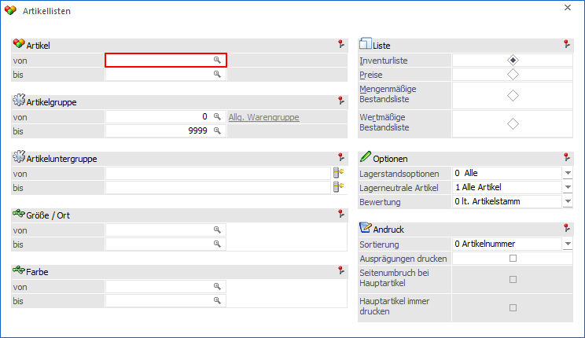
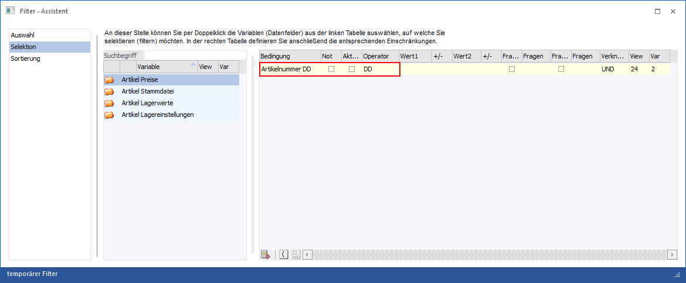
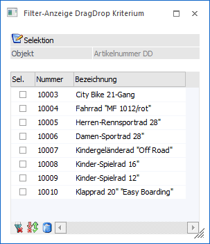

Bei allen Listen / Auswertungen, welche in dem Programm "Merkliste" angeboten werden, ist es möglich per Drag & Drop aus den Matchcodes heraus eine Selektion / Filterung für die Ausgabe zu erzeugen.
Durch dieses Drag & Drop entsteht ein temporärer Filter mit dem Operator "DD".
Beispiel
In der Auswertung "Artikellisten" (Typ "Inventurliste) wird der Artikelmatchcode aufgerufen. Nach der Suche werden die gewünschten Einträge in Tabelle der Suchergebnisse markiert und können mittels Drag & Drop in jenes Feld gezogen werden, von dem aus vorhin der Matchcode aufgerufen wurde (in diesem Beispiel das Feld "Artikel").

Dies bewirkt, dass ein temporärer Filter angelegt wird, welcher genau diese Einträge beinhaltet. Wenn über "Filter bearbeiten" der temporäre Filter zur Bearbeitung geöffnet wird, wird im Bereich "Selektion" das Filterkriterium mit dem Operator DD (steht für Drag & Drop) angezeigt.

Durch einen Doppelklick auf das Feld "Wert1" öffnet sich das Fenster Filter-Anzeige DragDrop Kriterium, in welchem die einzelnen Selektionskriterien angezeigt werden. In diesem Fenster ist es möglich, einzelne Einträge zu entfernen. Dazu muss die Checkbox "Sel." der betroffenen Einträge aktiviert, der Löschen-Button gedrückt und dieses mit dem Button "Ok" gespeichert werden.

Buttons

Ø Ok
Durch Anwahl des Buttons "Ok" bzw. der Taste F5 werden die Änderung gespeichert.
Ø Ende
Durch Anwahl des Buttons "Ende" bzw. der Taste ESC wird das Fenster geschlossen und alle nicht gespeicherten Eingaben verworfen.